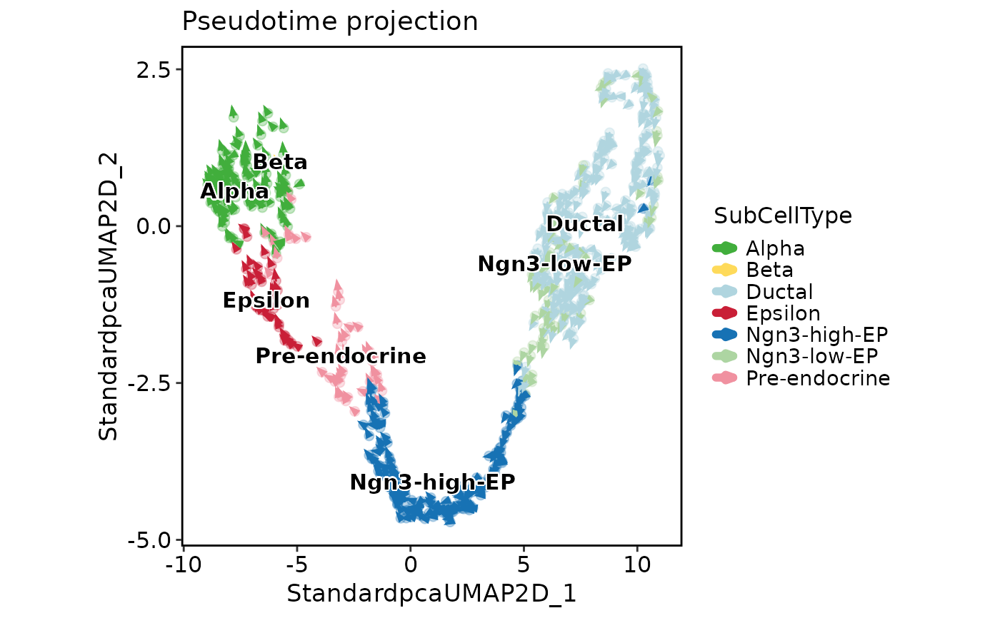
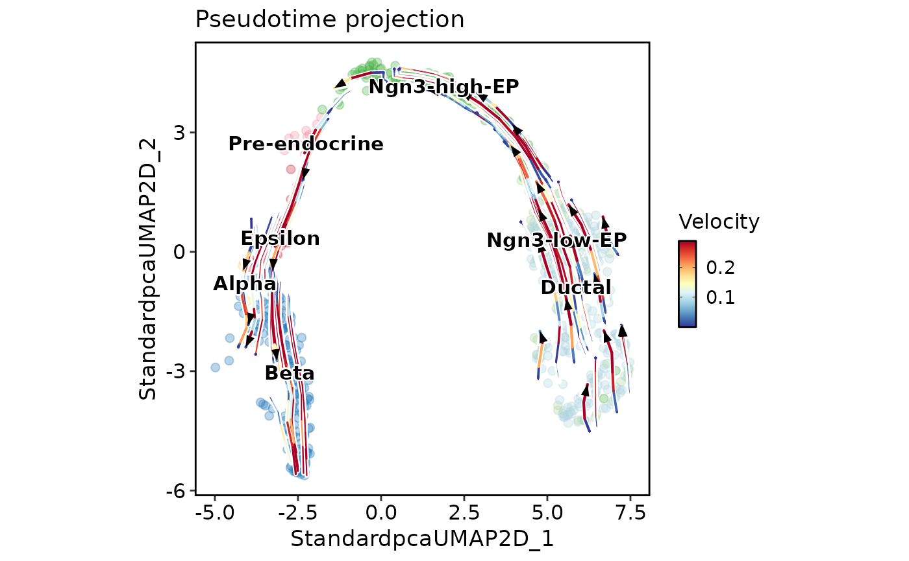
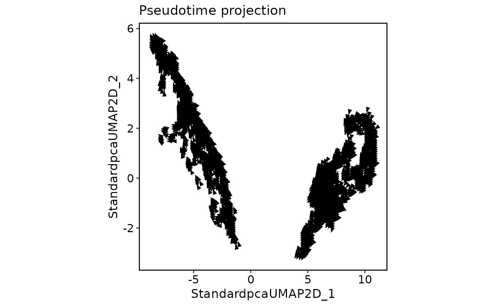
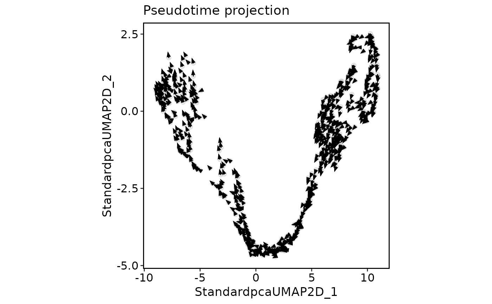

This function creates a projection plot similar to VelocityPlot, but uses pseudotime data instead of RNA velocity analysis results.
Usage
PseudotimeProjectionPlot(
srt,
reduction,
time_key,
dims = c(1, 2),
cells = NULL,
method = c("knn", "gradient"),
k = 30,
graph_name = NULL,
plot_type = c("raw", "grid", "stream"),
group.by = NULL,
group_palette = "Chinese",
group_palcolor = NULL,
n_neighbors = ceiling(ncol(srt@assays[[1]])/50),
density = 2,
smooth = 0.5,
scale = 1,
min_mass = 1,
cutoff_perc = 5,
arrow_angle = 20,
arrow_color = "black",
streamline_L = 5,
streamline_minL = 1,
streamline_res = 1,
streamline_n = 15,
streamline_width = c(0, 0.8),
streamline_alpha = 1,
streamline_color = NULL,
streamline_palette = "RdYlBu",
streamline_palcolor = NULL,
streamline_bg_color = "white",
streamline_bg_stroke = 0.5,
aspect.ratio = 1,
title = "Pseudotime projection",
subtitle = NULL,
xlab = NULL,
ylab = NULL,
legend.position = "right",
legend.direction = "vertical",
theme_use = "theme_scop",
theme_args = list(),
return_layer = FALSE,
palette = NULL,
palcolor = NULL,
show_cells = TRUE,
pt.size = 2,
pt.alpha = 0.3,
label = NULL,
label.size = 4,
label.fg = "black",
label.bg = "white",
label.bg.r = 0.1,
seed = 11
)Arguments
- srt
A Seurat object.
- reduction
Which dimensionality reduction to use. If not specified, will use the reduction returned by DefaultReduction.
- time_key
Name of the column in the Seurat object metadata containing pseudotime values.
- dims
Dimensions to plot, must be a two-length numeric vector specifying x- and y-dimensions
- cells
A character vector of cell names to use.
- method
Method to compute velocity vectors from pseudotime. Can be
"gradient"or"knn". Default is"knn".- k
Number of nearest neighbors to use when
method = "knn". Default is30.- graph_name
Name of the KNN graph in the Seurat object to use. If
NULL, a new graph will be computed. Default isNULL.- plot_type
Type of plot to create. Can be
"raw","grid", or"stream".- group.by
Name of one or more meta.data columns to group (color) cells by.
- group_palette
Name of the palette to use for coloring the groups. Defaults is
"Chinese".- group_palcolor
Colors to use for coloring the groups. Defaults is
NULL.- n_neighbors
Number of neighbors to include for the density estimation. Defaults is
ceiling(ncol(srt@assays[[1]]) / 50).- density
Scale for the streamline grid (number of points per axis is
ceiling(50 * density)). Default is2(CellRank/scvelo-style).- smooth
Smoothing parameter for density estimation. Defaults is
0.5.- scale
Scaling factor for the velocity vectors. Defaults is
1.- min_mass
Minimum mass value for the density-based cutoff. Defaults is
1.- cutoff_perc
Percentile value for the density-based cutoff. Defaults is
5.- arrow_angle
Angle of the arrowheads. Defaults is
20.- arrow_color
Color of the arrowheads. Defaults is
"black".- streamline_L
Typical length of a streamline in x and y units
- streamline_minL
Minimum length of segments to show.
- streamline_res
Resolution parameter (higher numbers increases the resolution).
- streamline_n
Number of points to draw.
- streamline_width
Size of streamline.
- streamline_alpha
Transparency of streamline.
- streamline_color
Color of streamline.
- streamline_palette
Color palette used for streamline.
- streamline_palcolor
Custom colors used for streamline.
- streamline_bg_color
Background color of streamline.
- streamline_bg_stroke
Border width of streamline background.
- aspect.ratio
Aspect ratio of the panel. Default is
1.- title
The text for the title. Defaults is
"Pseudotime projection".- subtitle
The text for the subtitle for the plot which will be displayed below the title. Default is
NULL.- xlab
The x-axis label of the plot. Default is
NULL.- ylab
The y-axis label of the plot. Default is
NULL.- legend.position
The position of legends, one of
"none","left","right","bottom","top". Default is"right".- legend.direction
The direction of the legend in the plot. Can be one of
"vertical"or"horizontal".- theme_use
Theme used. Can be a character string or a theme function. Default is
"theme_scop".- theme_args
Other arguments passed to the
theme_use. Default islist().- return_layer
Whether to return the plot layers as a list. Defaults is
FALSE.- palette
Deprecated alias of
group_palette.- palcolor
Deprecated alias of
group_palcolor.- show_cells
Whether to show cell points on the plot. Defaults is
TRUE.- pt.size
Size of cell points. Defaults is
2(CellRank-style overlapping patches).- pt.alpha
The transparency of the data points. Default is
0.3(CellRank/scvelo-style).- label
Whether to label the cell groups. Defaults is
TRUEwhengroup.byis specified.- label.size
Size of labels.
- label.fg
Foreground color of labels. Defaults is
"black".- label.bg
Background color of labels. Defaults is
"white".- label.bg.r
Background ratio of label.
- seed
Random seed for reproducibility. Default is
11.
Examples
data(pancreas_sub)
pancreas_sub <- standard_scop(pancreas_sub)
#> ℹ [2026-05-14 06:46:46] Start standard processing workflow...
#> ℹ [2026-05-14 06:46:46] Checking a list of <Seurat>...
#> ! [2026-05-14 06:46:46] Data 1/1 of the `srt_list` is "unknown"
#> ℹ [2026-05-14 06:46:46] Perform `NormalizeData()` with `normalization.method = 'LogNormalize'` on 1/1 of `srt_list`...
#> ℹ [2026-05-14 06:46:48] Perform `Seurat::FindVariableFeatures()` on 1/1 of `srt_list`...
#> ℹ [2026-05-14 06:46:49] Use the separate HVF from `srt_list`
#> ℹ [2026-05-14 06:46:49] Number of available HVF: 2000
#> ℹ [2026-05-14 06:46:49] Finished check
#> ℹ [2026-05-14 06:46:49] Perform `Seurat::ScaleData()`
#> ℹ [2026-05-14 06:46:49] Perform pca linear dimension reduction
#> ℹ [2026-05-14 06:46:50] Use stored estimated dimensions 1:20 for Standardpca
#> ℹ [2026-05-14 06:46:50] Perform `Seurat::FindClusters()` with `cluster_algorithm = 'louvain'` and `cluster_resolution = 0.6`
#> ℹ [2026-05-14 06:46:50] Reorder clusters...
#> ℹ [2026-05-14 06:46:50] Skip `log1p()` because `layer = data` is not "counts"
#> ℹ [2026-05-14 06:46:50] Perform umap nonlinear dimension reduction
#> ℹ [2026-05-14 06:46:50] Perform umap nonlinear dimension reduction using Standardpca (1:20)
#> ℹ [2026-05-14 06:46:55] Perform umap nonlinear dimension reduction using Standardpca (1:20)
#> ✔ [2026-05-14 06:47:01] Standard processing workflow completed
pancreas_sub <- RunSlingshot(
pancreas_sub,
reduction = "UMAP",
group.by = "SubCellType"
)
#> Warning: Removed 9 rows containing missing values or values outside the scale range
#> (`geom_path()`).
#> Warning: Removed 9 rows containing missing values or values outside the scale range
#> (`geom_path()`).
 PseudotimeProjectionPlot(
pancreas_sub,
reduction = "UMAP",
group.by = "SubCellType",
time_key = "Lineage1",
method = "gradient",
plot_type = "raw"
)
#> ! [2026-05-14 06:47:02] Removed 339 cells with NA pseudotime values
PseudotimeProjectionPlot(
pancreas_sub,
reduction = "UMAP",
group.by = "SubCellType",
time_key = "Lineage1",
method = "gradient",
plot_type = "raw"
)
#> ! [2026-05-14 06:47:02] Removed 339 cells with NA pseudotime values

PseudotimeProjectionPlot(
pancreas_sub,
reduction = "UMAP",
time_key = "Lineage1",
group.by = "SubCellType",
plot_type = "stream",
show_cells = TRUE,
label = TRUE
)
#> ! [2026-05-14 06:47:03] Removed 339 cells with NA pseudotime values
#> ℹ [2026-05-14 06:47:03] Computing KNN graph from embedding...

PseudotimeProjectionPlot(
pancreas_sub,
reduction = "UMAP",
time_key = "Lineage2",
plot_type = "grid"
)
#> ! [2026-05-14 06:47:11] Removed 185 cells with NA pseudotime values
#> ℹ [2026-05-14 06:47:11] Computing KNN graph from embedding...

PseudotimeProjectionPlot(
pancreas_sub,
reduction = "UMAP",
time_key = "Lineage1",
method = "gradient",
plot_type = "raw"
)
#> ! [2026-05-14 06:47:13] Removed 339 cells with NA pseudotime values
